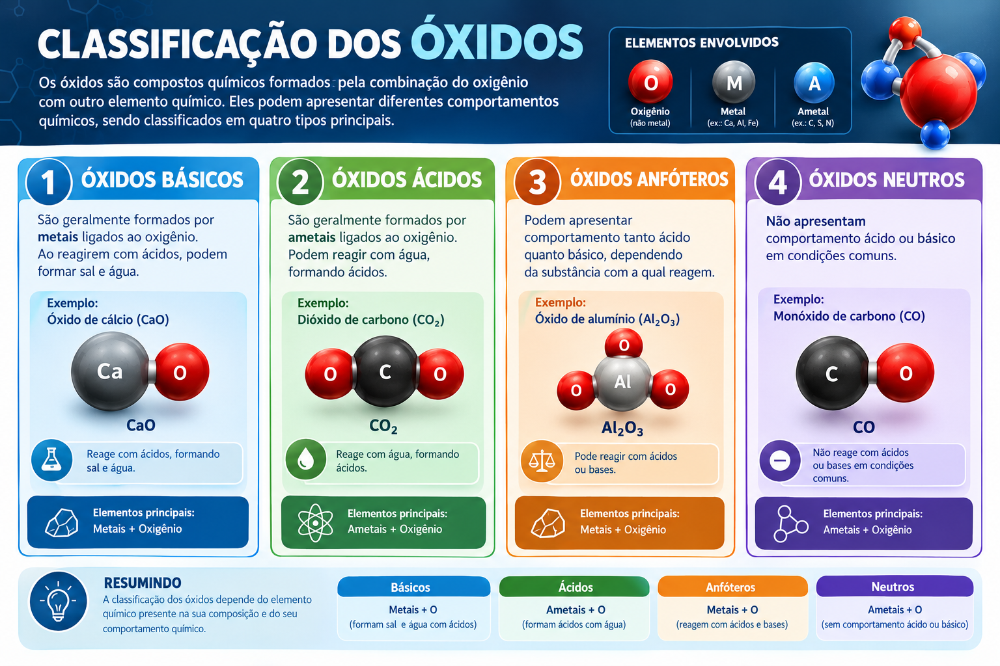

Classificação dos Óxidos

Como classificar um óxido
A classificação depende de como o óxido se comporta ao reagir com água, ácidos e bases. Em geral, os óxidos de metais são básicos e os de ametais são ácidos.
Óxidos básicos
São formados por metais, como sódio, potássio, cálcio e magnésio (Na₂O, K₂O, CaO, MgO). Têm ligação iônica e são sólidos à temperatura ambiente.
Reagem com água formando bases (CaO + H₂O → Ca(OH)₂) e com ácidos formando sal e água (CaO + 2 HCl → CaCl₂ + H₂O).
Óxidos ácidos
São formados por ametais, como carbono, enxofre e nitrogênio (CO₂, SO₂, SO₃, N₂O₅). Têm ligação covalente e são moleculares.
Reagem com água formando ácidos (SO₃ + H₂O → H₂SO₄) e com bases formando sal e água (CO₂ + 2 NaOH → Na₂CO₃ + H₂O).
Passo a passo
Passo 1 - Dê o nome ao óxido
Use “óxido de” + nome do elemento. Exemplos: Na₂O é óxido de sódio; CO₂ é dióxido de carbono. Quando o elemento tem mais de um Nox, indique-o: FeO é óxido de ferro II e Fe₂O₃ é óxido de ferro III.
Passo 2 - Veja o outro elemento
Se for um metal com Nox +1 ou +2 (Na, K, Ca, Mg), o óxido é básico. Se for um ametal (C, S, N, P), o óxido é ácido.
Passo 3 - Anfóteros e neutros
Os anfóteros, como ZnO e Al₂O₃, reagem com ácidos e com bases. Os neutros, como CO, NO e N₂O, não reagem com água, ácidos nem bases.
Passo 4 - Peróxidos e óxidos duplos
Nos peróxidos há a ligação O–O e o oxigênio tem Nox −1, como no H₂O₂ e no Na₂O₂. Os óxidos duplos, como o Fe₃O₄ (magnetita), equivalem à mistura de dois óxidos do mesmo elemento: FeO · Fe₂O₃.